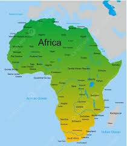

comparação entre a África e a América do Sul



A África é o terceiro maior continente, berço da humanidade, com mais de 1,4 bilhão de pessoas em 54 países, caracterizado por uma vasta diversidade cultural, natural (savanas, florestas, desertos) e climática, atravessado pela Linha do Equador e Meridiano de Greenwich, com rica história, idiomas múltiplos (árabe, suaíli, inglês, francês, português, etc.) e uma rápida urbanização, quebrando estereótipos de pobreza e mostrando dinamismo e avanços tecnológicos.
A América do Sul é um subcontinente que envolve a parcela meridional da América (continente americano). Com extensão de 17 819 100 km2, possui pouco menos de 12% da superfície terrestre e 6% da população mundial. Quatro quintos do continente ficam abaixo da Linha do Equador, sendo que a América do Sul é banhada pelo mar do Caribe, oceano Atlântico e oceano Pacífico. A oeste, temos a vasta cadeia montanhosa dos Andes, que chega até 6700 m de altitude em alguns pontos. Ele localiza-se desde a Venezuela, percorrendo toda a banda ocidental da América do Sul, em direção ao seu extremo-meridional. No norte, predomina a densa e úmida Floresta Amazônica, enquanto na área central temos os terrenos alagados que abarcam o Pantanal brasileiro e Chaco boliviano.